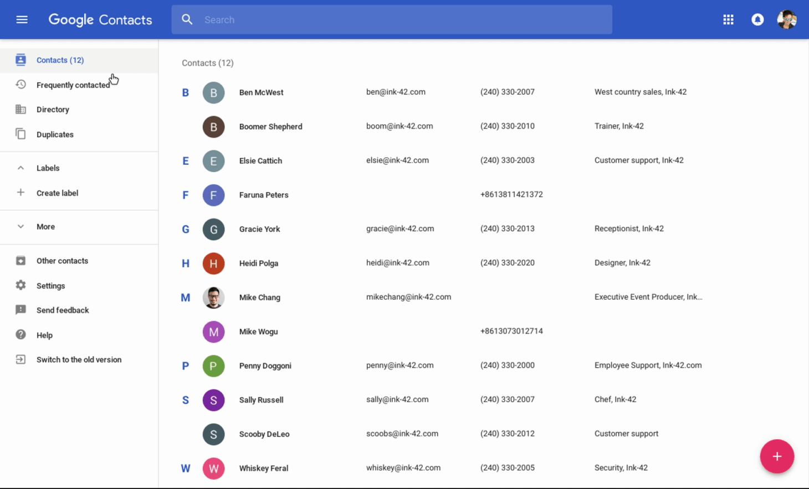
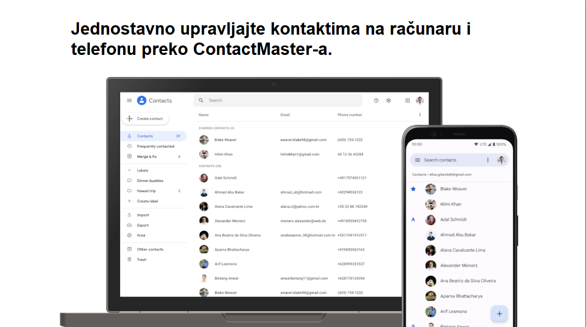

Nov, efikasan i moderan način za upravljanje kontaktima.
Samo u ContactMaster-u.

ContactMaster je internet aplikacija za upravljanje kontaktima. Radi na principu Google Contacts API-ja koji omogućuje povezivanje na Google-ove servise, i samim tim pristup istim. Nakon što ContactMaster uspostavi kontakt sa Google-om, razmenjuju se tokeni koji služe za indetifikaciju korisnika i pristup profilu.

Nakon što aplikacija ContactMaster dobije pristup profilu, odabirom na dugme "Aplikacija" u navigacionom meniju, moguće je kreirati nove kontakte, modifikovati postojeće tako što izmenimo ime i/ili broj, kao i brisanje nepotrebnih kontakata. Sve ovo se može uraditi brzo i jednostavno na samo par klikova koristeći korisnički interfejs.